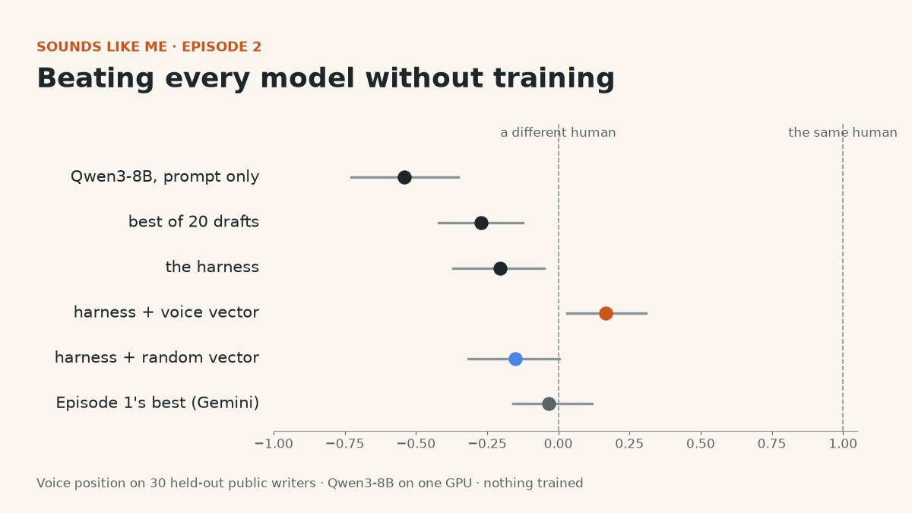
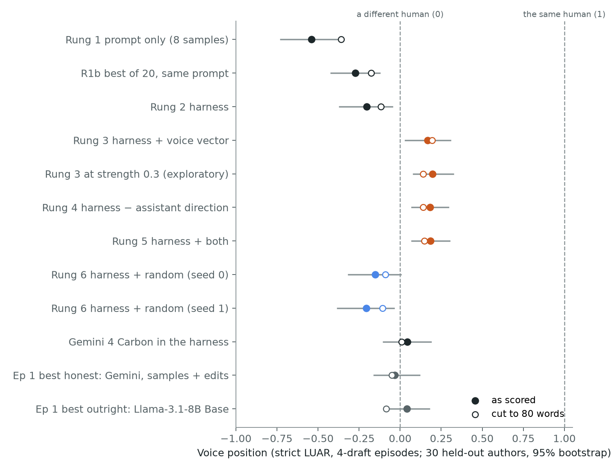
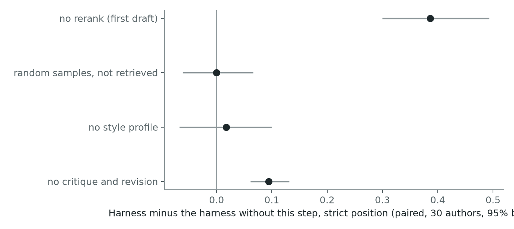
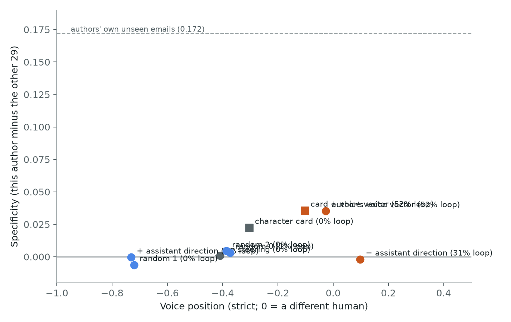
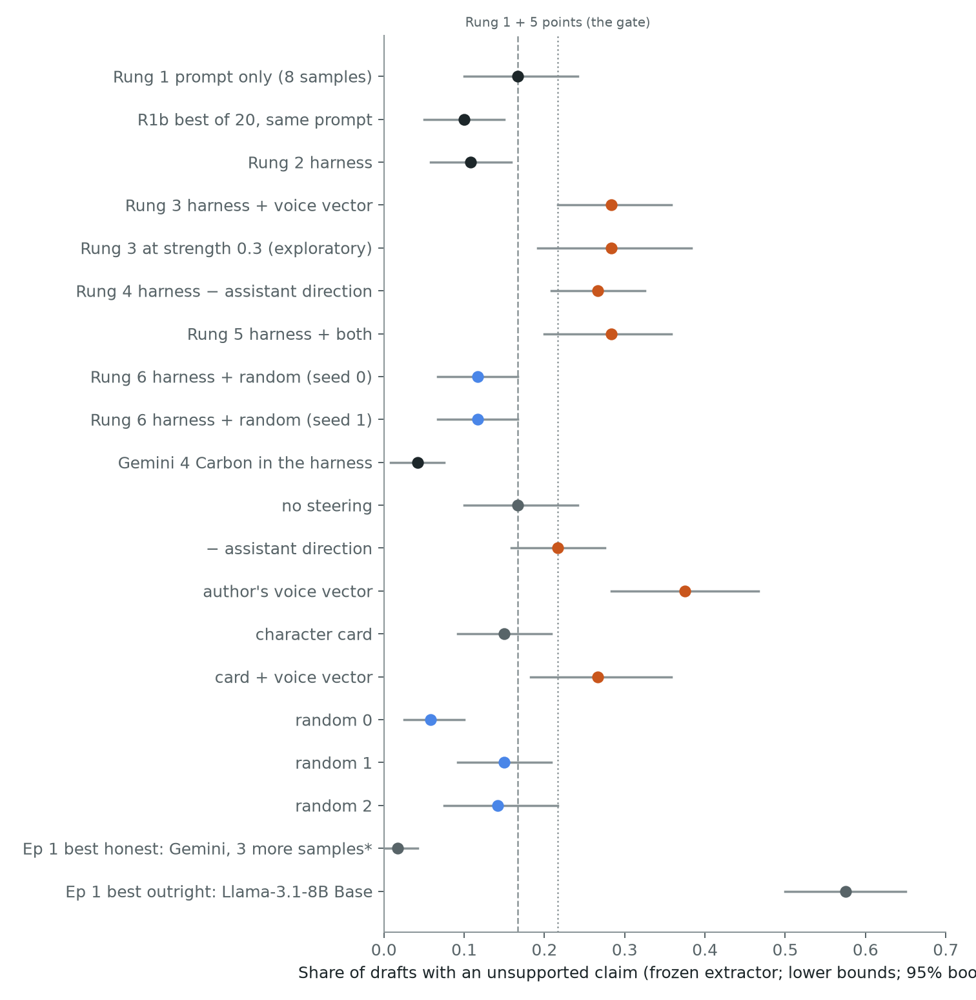
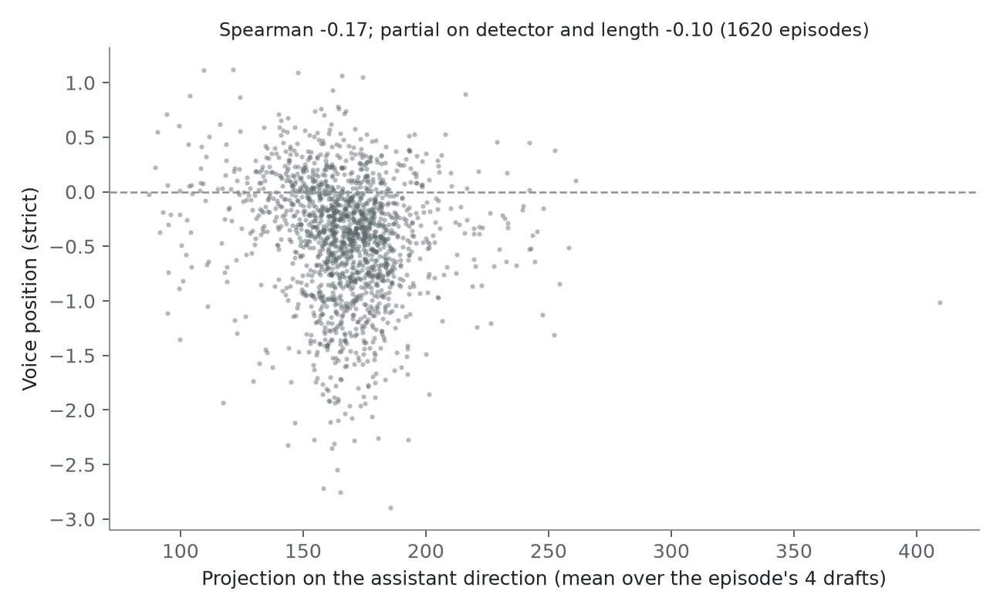

← Research·Sounds Like Me · RL for unverifiable writing·Experiments·
Beating every model without training? A harness on an unverifiable reward
Reinforcement learning works when answers can be checked. Most writing can't be checked: there's no answer key for "sounds like me". This series builds a reward for authentic voice from public writers, tests it against every model, and then trains on it.

results/summary.json.Summary: the short answer and the key results
In short
Can a pipeline around an open 8B model, with nothing trained, write more like a specific person than any Episode 1 model, on rulers it never optimised?
On voice, yes; with honesty counted, no. The harness alone lifted Qwen3-8B from −0.54 to −0.20 on a scale from a different human (0) to the same human (1), 80% of it from picking the best of many drafts, and stayed 0.17 below Episode 1's best honest model (Gemini 4 Carbon, −0.03). Adding the writer's voice vector inside the model while it wrote took the harness to +0.17, ahead of Gemini by +0.20 [+0.06, +0.34] and level with it on an authorship model it never saw. But those drafts invented a claim 28% of the time against Gemini's 2%, looped 28% of the time, and covered half the brief, so they fail the honesty gate written before the run. The one win that passes it is Gemini inside the same harness: the most specific contestant in either episode (0.089 against 0.070), at 4% unsupported claims. Two of seven predictions hit.
Key results
| What we tested | Result | Compared with |
|---|---|---|
| Does the harness alone beat Episode 1's best honest model (P1)? | No. Harness −0.20 [−0.37, −0.05]; paired with Gemini 4 Carbon −0.17 [−0.36, −0.02] | Qwen3-8B with a prompt: −0.54; Gemini with samples and simulated edits: −0.03 |
| Where does the harness gain come from (P3)? | Mostly from choosing. The best of 20 drafts from the plain prompt got 80% of the harness gain (+0.27 of +0.34). Without its rerank the harness fell to −0.59; retrieval and the style profile added nothing measurable | Per-step ablation on the same writers |
| Does steering add voice beyond the harness (P4)? | Yes, a lot. Harness + the writer's voice vector +0.17 [+0.03, +0.31]: +0.31 [+0.16, +0.47] over the harness at 80 words, +0.35 [+0.18, +0.53] over random vectors in the harness; specificity 0.077 (Gemini 0.070). Without looping or broken drafts: +0.18 (21 writers) | Harness + random vector −0.15 and −0.21. Loops: 28% of drafts (25% by the 4-gram rule) |
| Does it hold at a strength that barely loops (exploratory)? | Mostly. At strength 0.3, chosen on development writers for no loops: +0.20 [+0.08, +0.32], specificity 0.082, loops 7.5-9% on held-out writers; without them +0.15 (29 writers) | Registered strength 0.4: loops 25-28% |
| Do rulers the harness never saw agree (P2)? | Not for the plain harness; level for the steered one. True writer's rank under a character n-gram attributer: harness 12.7 of 30, steered 8.0, Gemini 7.9. A small preference model preferred harness drafts over Gemini's 21% of the time, steered ones 61% | The preference model also rewards "not AI" (see 4.5) |
| Is the fingerprint the assistant persona (P5, P6)? | Yes for position, no for the person. Steering away from an "assistant" direction beat random directions by +0.59 in position with no gain in specificity (−0.002); in the harness, +0.39 over the plain harness, specificity +0.002. Its projection barely predicted voice across Episode 1's drafts (ρ −0.17) | A written character card: specificity +0.022, no loops |
| Does the harness remove steering's honesty cost (P7)? | No. Unsupported claims: voice vector alone 37.5%, inside the harness 28.3% (prompt only 16.7%): +11.7 points [+1.7, +20.8], outside the pre-registered 5-point gate. Every steered arm failed it | Plain harness 10.8%; Gemini 1.7%; Gemini in the harness 4.2% |
| Cost per final draft | 10 to 22 times a single closed-model draft. Qwen3-8B harness $0.029-0.045 of rented GPU (20 generations and 20 honesty self-checks); Gemini in the harness $0.020 | Gemini, one draft: $0.002 |
Start with Episode 1: can any model sound like you? It builds the voice scale, the specificity control and the honesty check this episode uses.
01Introduction
An Enron trader opens a memo with "Following please find…". Qwen3-8B, asked to write a cold email in that trader's voice, opens with "I hope you're having a great day." Pick the best of 20 tries and fix it with notes, and the harness gets "Following please find our available truckload capacity…": the habit is there, but by the second line it is a salesperson again. Add the trader's voice vector inside the model as it writes, and the whole draft reads as flat, declarative and terse: "Lanebridge Logistics is available to provide quotes… Please note that this is the first contact." That is closer to the trader, and it also says "this is the first contact" twice and drops the ask. Across 30 writers that trade held: the steered harness beat every model on voice and lost on honesty.
What is known. Harnesses (retrieve, draft, critique, revise, pick) are the cheap way to improve a model without training, and in maths and code a verifier makes them strong. For personal writing, PROSE (2025) infers a user's preferences from their writing and verifies each against the samples. Episode 1 found that no model wrote more like a person than a stranger does, that most of what samples bought was "less assistant" rather than "more like you", and that a voice vector inside the model moved drafts further, with loops and invented facts.
What is missing. No one has asked whether a harness beats every model on a reward with no answer key, judged on rulers it did not optimise, or whether steering adds anything once the harness has done the cheap things. A harness optimises its rerank score, so its gain on that score says little; the question is whether the gain survives a different ruler.
Can a harness around an open 8B model, with nothing trained, beat every model at sounding like a specific person, without gaming its own ruler or paying in honesty? And does steering add anything beyond it?
What this note does. It builds the harness on Qwen3-8B, climbs a no-training ladder on the same 30 held-out writers and briefs as Episode 1, and scores every rung on the Episode 1 rulers plus two it never saw. It contributes:
- a harness (retrieve, verified style profile, draft, critique, revise, best of 20) with an honest per-step ablation: almost all of it is the rerank;
- a no-training ladder with random-vector and equal-compute controls: steering adds voice beyond the harness, and invents facts while it does;
- a persona test: an "assistant" direction inside the model, read across Episode 1's drafts and steered against;
- two unseen rulers (a character n-gram attributer and a small voice preference model, with a model card) and the finding that the preference model is partly an AI detector;
- cost per draft beside every score.
What counts as success. Written in the plan before any held-out run:
- The harness beats Episode 1's best honest model (Gemini 4 Carbon with samples and simulated edits) by more than 0.10, with the interval above 0.
- The win holds on rulers the harness never optimised: an n-gram attributer and a preference model trained only on development authors.
- No arm counts as a win if its unsupported-claim rate is more than 5 points above the prompt-only rung's.
02Setup
Same data as Episode 1. 30 held-out writers (24 Enron senders, 6 bloggers), each with 12 samples a model may see, 5 profile texts the voice is scored against and 5 ceiling texts (their own unseen writing); 4 synthetic sales briefs per writer, each with a fact list and a known relationship; 15 development writers for tuning. Writers are named "Author A" and so on. The briefs are invented; the design draws on my experience building sales AI for freight, and no customer text is used.
The harness (one model, Qwen3-8B, does every step, so steering can be added to any step):
- Retrieve the writer's 6 samples (of 12) closest to the brief (TF-IDF).
- Infer a style profile and verify it (PROSE-style): measured facts from all 12 samples (median length, greeting and sign-off habits, sentence length, punctuation rates) plus up to 6 written habits the model infers, each then checked by the model against the samples.
- Draft 16 candidates from the samples, the profile and the brief (temperature 0.9).
- Critique each candidate with in-loop checks: LUAR similarity to the writer's 12 samples (never the profile or ceiling texts the scorer uses), the AI detector, the copy filter, and an honesty self-check by the same Qwen3-8B. The 4 best get written notes ("remove claims the facts don't support: …", "they usually write about 60 words; this has 140").
- Revise those 4.
- Rerank the 20: drop copied, looping or self-flagged drafts, then pick the one closest to the samples.
The ladder (each rung on the same 30 writers × 4 briefs):
| Rung | What it adds | Generations per brief |
|---|---|---|
| Rung 1 prompt only | 8 random samples, Episode 1's best template ("Write the next email they send") | 1 |
| R1b best of 20 | Rung 1's prompt, 20 drafts, the same checks and rerank as the harness: the "more samples, not the harness" control | 20 |
| Rung 2 harness | Steps 1-6 | 20 |
| Rung 3 harness + voice vector | The writer's Episode 1 vector (layer 24, 0.4 × the mean activation norm) during drafting and revision | 20 |
| Rung 4 harness − assistant | The assistant direction subtracted, same layer and size | 20 |
| Rung 5 harness + both | The two directions summed, rescaled to the same size | 20 |
| Rung 6 harness + random | A random direction of the same size (2 seeds) | 20 |
| Gemini in the harness | Gemini 4 Carbon doing steps 3 and 5 (4 drafts, 2 revisions), the same checks | 6 |
The assistant direction is built from development writers only: the mean layer-24 activation of Qwen3-8B over 60 of its own no-samples drafts, minus the mean over the 15 development writers' 180 real emails. Persona tests use Episode 1's plain prompt with no harness: the direction subtracted and added, three random directions, a written character card per writer ("You are a power trader at an energy firm… sign off with initials…", written by Qwen3-8B from 8 samples), the writer's voice vector, and card plus vector.
Rulers (each from Episode 1 unless marked new):
- Voice position: LUAR on a writer's 4 drafts, placed between other people (0) and the writer's own unseen emails (1), greetings and sign-offs stripped and whitespace collapsed. Also cut to the first 80 words (Episode 1's length check).
- Specificity: similarity to this writer minus the mean similarity to the other 29. Humans score 0.172.
- Honesty: the share of drafts with a claim the fact list does not support, from Episode 1's frozen Qwen3-32B extractor, which the harness never calls. Rates are lower bounds (Episode 1's check found half the misses).
- New, unseen by the harness: a character 2-4-gram attributer trained on the 30 writers' profile and ceiling texts (readout: the true writer's rank among 30), and a small voice preference model (below).
- Loops (a 5-word run 3+ times, or more than 20% repeated 4-grams), the AI detector, task coverage and cost.
03How the study was run
- Write the plan with a Design section and seven predictions; commit it before any run.
- Check the new rulers (3.1): the attributer, the preference model, the in-loop honesty self-check.
- Tune on development writers (6 writers × 4 briefs per try, 13 tries logged in results.tsv): the rerank's detector weight, the number of drafts and temperature, a style-first system prompt, the profile verifier.
- Pilot every rung and the persona tests on development writers; price Gemini in the harness on 5 of them.
- Run held-out: 10 harness arms × 120 briefs × 20 generations (24,000 Qwen3-8B generations plus as many self-checks), 1,080 persona drafts, 720 Gemini calls.
- Score every arm on every ruler; 95% bootstrap over writers, paired where arms share writers.
- Read the drafts, which found counting runs the loop rule missed and invented phone numbers; a degenerate-output check and a clean re-score were added then, labelled as added after results.
- Review the code (one independent reviewer): a rerank fallback bug and an ablation leak were fixed and the affected picks redone before publication (see 6).
| Fixed before any held-out run | Changed after reading results |
|---|---|
| Writers, briefs, rulers, the Part C layer and strength, the comparators, seven predictions and their thresholds | Nothing in the registered design |
| The harness's steps | Tuned on development writers before held-out: 16 drafts at temperature 0.9 instead of 8 at 0.8; detector weight 0 instead of 0.5; best-of-N raised to 20 drafts to keep equal compute |
| The preference model's pass bar (0.70) | The first recipe failed on held-out writers (0.61); it was retuned on development writers only and then passed (0.85). The held-out check was looked at twice |
| Loops as a 5-word run repeated 3+ times | After reading drafts: a counting-run and compression check, the series' 4-gram loop rule, and a clean re-score of every arm |
| Steering at the registered strength (0.4) | Loops at that strength (28% in Rung 3) led to an exploratory arm at a lower, development-chosen strength, labelled as exploratory |
Conditions: Qwen3-8B on Modal H100s with a forward hook for steering (thinking off for writing, on for the honesty self-check), up to 320 new tokens; Gemini through the batch API with reasoning low and 400 output tokens. Spend: $2.75 of OpenRouter for this episode ($6.73 of the series' $8 cap, enforced in code) and $71.85 of Modal compute.
3.1 Every new ruler was checked first, and one needed a second try
| Ruler | Known-answer check | Bar | Result | Verdict |
|---|---|---|---|---|
| n-gram attributer (new) | Each held-out writer's own samples, never trained on, in 90 episodes of 4 | top-1 ≥ 0.8 | 0.956 (chance 0.033) | Passed |
| Preference model (new), first recipe | Own unseen email vs another held-out writer's, 150 pairs | accuracy ≥ 0.70 | 0.613 | Failed |
| Preference model, retuned on development writers | The same 150 pairs | accuracy ≥ 0.70 | 0.853 (0.813 on the final scoring run) | Passed |
| Honesty self-check (in the loop, not a ruler) | Episode 1's 60 tuning labels; its 30 fresh labels | none | 0.85; 0.55 | Used as a filter only |
| Voice, detector, honesty extractor | Episode 1's checks | as Episode 1 | 0.974, 1.000, 0.875 / 0.667 | As Episode 1 (honesty: lower bounds) |
The preference model's card. DeBERTa-v3-small as a cross-encoder (two of the writer's emails, then the candidate), trained with a Bradley-Terry loss for 5 epochs on pairs from the 15 development writers only: own email over another writer's (authorship), a simulated edit over its draft, and own email over a Qwen3-8B draft. There are no human preference labels in it. It separates human from Qwen text almost perfectly (0.99), which matters in 4.5. It is a ruler the harness never optimised, not a model of what any person prefers.
04Results
4.1 The harness alone lifts Qwen3-8B but stays below Episode 1's best (P1)
Figure 1 is the ladder. Prompting Qwen3-8B with 8 samples gives −0.54; the harness gives −0.20 [−0.37, −0.05]. Episode 1's best honest contestant, Gemini 4 Carbon with samples and simulated edits, sits at −0.03, and the paired gap is −0.17 [−0.36, −0.02]. The pre-registered prediction (harness ahead by more than 0.10) misses. At 80 words the gap narrows to −0.07 [−0.21, +0.07]; on specificity the harness is behind (0.044 against 0.070).

4.2 Most of the harness is choosing the best of many (P3)
Best of 20 drafts from the plain prompt, with the same checks and rerank, reaches −0.27: 80% of the harness's gain over the prompt (+0.27 of +0.34; P3 hit), and the harness's lead over it is +0.07 [−0.03, +0.17]. Figure 2 takes the harness apart on the same writers. Without the rerank (its first draft) it falls to −0.59, below the plain prompt; without critique and revision, −0.30 (revisions were picked for 60 of 120 briefs). Random samples instead of retrieved ones changed nothing (+0.00 [−0.06, +0.07]), and neither did dropping the style profile (+0.02 [−0.07, +0.10]). The profile verifier was the weak step: it kept 170 of 180 habits the model inferred, including some that contradicted the measured facts.

Selection also did the honesty work. The harness's first draft carried an unsupported claim 31% of the time (the frozen extractor) against 11% for its pick: at temperature 0.9 the drafts invent, and the rerank's self-check filter removed most of it.
4.3 Steering adds voice the harness cannot, and pays in loops, the brief and facts (P4)
The prediction was that a harness would make steering redundant. It missed by a wide margin. With the writer's voice vector added while drafting and revising, the harness reached +0.17 [+0.03, +0.31], ahead of Gemini by +0.20 [+0.06, +0.34] (+0.24 [+0.13, +0.36] at 80 words). Against the harness it gained +0.31 [+0.16, +0.47] at 80 words, and against the same harness with random vectors of the same size +0.35 [+0.18, +0.53]. Specificity rose from 0.044 to 0.077 (+0.032 [+0.015, +0.053]; positive for 28 of 30 writers), level with Gemini's 0.070 (+0.006 [−0.012, +0.024]).
The costs are in the drafts. 28% of the steered harness's picks loop (25% by the series' rule of more than 20% repeated 4-grams), because for 38 of 120 briefs every one of the 20 candidates looped or was flagged. Task coverage fell from 0.69 to 0.50: steered drafts often drop the ask. Re-scored without looping or broken drafts (writers with 2 or more clean drafts), the steered harness stays at +0.18 on 21 writers, so the loops do not carry its score. Here is one, from the trader of the opening, against the plain harness:
Rung 2 harness · a freight brief · detector 0.26Following please find our available truckload capacity for potato shipments from the ID area. Lanebridge Logistics offers asset-light truckload brokerage with a vetted carrier network. We can quote reefer or vented van capacity out of the ID area for your potato shipments. We'd like to schedule a 15-minute call next week to discuss your requirements and availability. …
Rung 3 harness + the writer's voice vector · same brief · detector 0.45Following please find the Lanebridge Logistics Offer to Red Butte Growers. Lanebridge Logistics offers asset-light truckload brokerage with a vetted carrier network. Potatoes usually ship Sep to Jun; the usual equipment is reefer or vented van. … Please note that this is the first contact. Please request a 15-minute call next week.
A lower strength (exploratory, added after the held-out loops). On development writers, strength 0.3 was the strongest setting with no looping drafts (0.1: −0.50; 0.2: +0.04; 0.3: +0.12, against the registered 0.4: +0.16 with 17% loops). On held-out writers it reached +0.20 [+0.08, +0.32], specificity 0.082, with loops in 7.5% of drafts (9% by the 4-gram rule, above the 5% aimed for) and +0.15 without them (29 writers). It covered more of the brief (0.63) but invented as often (28.3%). The registered result stands; the lower strength shows the voice gain is not a looping artefact, and that the honesty cost is not either.
4.4 Turning down the assistant makes drafts more human, not more like the writer (P5, P6)
This is the assistant-persona test: is the model's fingerprint the default assistant, and does turning it down bring back the person? The assistant direction is nearly the same thing as Episode 1's voice vectors: each writer's vector points 0.90 of the way along "away from the assistant" on average (cosine; 0.63 to 0.97), and it is almost identical to Episode 1's "slop" vector (0.99). Figure 3 plots the persona tests. Subtracting the direction, with no information about the writer, moved position from −0.41 to +0.10, +0.59 [+0.42, +0.76] above three random directions; specificity did not move (−0.002 [−0.019, +0.013]). P5 hits: the fingerprint is largely the assistant persona, and removing it buys generic human-likeness. Adding it did the opposite (−0.73). Inside the harness the same thing happened: subtracting the assistant (Rung 4) added +0.39 [+0.24, +0.55] over the plain harness at specificity +0.002 [−0.013, +0.016], and its score fell to +0.05 once looping drafts were removed.

What carries the person is the rest of the vector. The writer's own vector beat the assistant direction on specificity by +0.037 [+0.009, +0.068], and a written character card got +0.022 [+0.011, +0.032] over no card with no loops at all; the card and the vector together were no better than the vector alone (+0.000).
The presence test was weak. Across Episode 1's 1,620 held-out episodes, the mean projection of a writer's drafts on the assistant direction correlated with their voice position at ρ = −0.17 [−0.22, −0.13], and −0.10 once the detector score and length were taken out (P6 miss; Figure 5 in the appendix). The direction steers strongly and predicts weakly: one push moves text a long way along it, but ordinary drafts vary little there.
4.5 Rulers the harness never saw: level for the steered harness, behind for the plain one (P2)
The harness reranks on LUAR similarity to the writer's samples, so its LUAR score could be gamed. The n-gram attributer shares nothing with it. Under the attributer the true writer ranked 12.7 of 30 for the plain harness against 7.9 for Gemini (worse by 4.8 [3.1, 6.8]); the steered harness ranked 8.0, its lower-strength version 8.8 and Gemini in the harness 7.7, all level with Gemini. The preference model preferred the plain harness's draft over Gemini's for 21% of briefs and the steered harness's for 61%. P2 misses on both rulers. The plain harness's LUAR gain did not transfer to the attributer; the steered harness's did.
The preference model's verdicts need two cautions. Its highest scores went to the drafts with the lowest AI-detector scores, Llama-3.1-8B Base (detector 0.12, unsupported claims 58%) and the steered arms, not Gemini: it learned "human, not AI" from its third kind of training pair, and that dominates what it measures. And that pair always put a Qwen3-8B draft on the losing side, so part of its low score for the plain harness is "looks like Qwen". The attributer is the cleaner unseen check.
4.6 The harness does not remove steering's honesty cost (P7)

The voice vector on its own (no harness) put an unsupported claim in 37.5% of drafts against 16.7% for the unsteered prompt, as Episode 1 found. Inside the harness, whose rerank drops drafts its own self-check flags, it fell only to 28.3%: +11.7 points over the prompt [+1.7, +20.8], outside the pre-registered 5-point gate (P7 miss). Every steered arm failed the gate (26.7-28.3%), so by the rule written before the run none of them counts as a win, however high it scores. The plain harness (10.8%) and best-of-N (10.0%) passed, and Gemini in the harness invented in 4.2%. Reading the drafts found a kind the extractor misses: invented phone numbers in signatures ("Tel: (415) 782-7802"), a habit copied from the writers' own emails, in 16-18% of steered-harness drafts, 10% of the plain harness's and 2.5% of Gemini's.
4.7 The same harness around Gemini is the one honest win
With $4.02 of the OpenRouter cap left after Episode 1, Gemini 4 Carbon ran in the same harness (4 drafts, 2 revisions, the same checks). It reached +0.04 [−0.10, +0.19], +0.08 [−0.02, +0.17] over its own Episode 1 best, and specificity 0.089 (positive for 29 of 30 writers), +0.018 [+0.009, +0.028] over Episode 1: the highest of any arm in either episode, and the only gain over Episode 1 that both clears zero and passes the honesty gate (4.2% unsupported). It covered the brief (0.88), never looped, and cost $0.020 per final draft. Its drafts pick up the writers' habits without the steered model's stiffness ("Following please find an overview…", "Lisa -", a tab-separated list where the writer used one).
4.8 Read the drafts
report/data.js.4.9 Cost and latency
| Arm | Voice position | Without loops | Specificity | Unsupported | Looping | $ per final draft | GPU s per draft |
|---|---|---|---|---|---|---|---|
| Episode 1: Gemini 4 Carbon, samples + edits (one call) | −0.03 | −0.03 | 0.070 | 1.7% | 0% | 0.002 | n/a |
| R1b best of 20 (Qwen3-8B) | −0.27 | −0.27 | 0.028 | 10.0% | 0% | 0.031 | 25.9 |
| Rung 2 harness (Qwen3-8B) | −0.20 | −0.20 | 0.044 | 10.8% | 0% | 0.029 | 24.4 |
| Rung 3 harness + voice vector (Qwen3-8B) | +0.17 | +0.18 (21) | 0.077 | 28.3% | 28% | 0.043 | 36.0 |
| Rung 3 at strength 0.3 (exploratory) | +0.20 | +0.15 (29) | 0.082 | 28.3% | 7.5% | 0.040 | 33.3 |
| Rung 4 harness − assistant | +0.18 | +0.05 (26) | 0.046 | 26.7% | 21% | 0.045 | 37.5 |
| Gemini 4 Carbon in the harness | +0.04 | +0.04 | 0.089 | 4.2% | 0% | 0.020 | n/a |
"Without loops" re-scores each arm with looping and broken drafts removed (a 5-word run 3+ times, more than 20% repeated 4-grams, or a counting run), keeping writers with 2 or more clean drafts (their number in brackets). GPU seconds count H100 time for the 20 generations and the 20 honesty self-checks per brief, run in parallel batches. Gemini's cost is the batch bill only; its self-checks ran on the rented GPU and are not included.
05Implications for AI safety
A harness is the first thing anyone builds on an unverifiable reward, and this one showed the pattern a trained policy would follow. Most of its gain was selection against its own ruler, and that gain did not survive a ruler it never saw. Selection also did the honesty work: its first drafts invented in 31% of cases. The steering that bought real voice, the kind an unseen attributer also credits, came with loops, a dropped ask and invented facts in more than a quarter of drafts, and the harness's filter could not remove them. And the unseen preference model mostly rewarded "not AI": had it been the reward, it would have paid most for the drafts that invent the most. Each of these showed only because an honesty check the harness could not call, a loop and task count and an independent attributer sat beside the score.
Before optimising against "sounds like you", in a harness or with RL, put an authorship model the optimiser never sees, an honesty check it cannot call, and a loop and task count beside the score, and treat a voice gain that fails any of them as a hack, not a win.
06Predictions
Seven predictions were written in the plan before the held-out runs. A hit means the pre-registered metric crossed its threshold.
| # | Prediction | Threshold | Confidence | Result |
|---|---|---|---|---|
| P1 | The harness beats Episode 1's best honest model | Rung 2 − Gemini > +0.10, interval above 0 | 60% | Miss: −0.17 [−0.36, −0.02] |
| P2 | Rulers the harness never saw agree | attributer rank better and preference win ≥ 0.55 | 50% | Miss: rank 4.8 worse; win rate 0.21. The steered harness was level (rank +0.1, win 0.61) |
| P3 | Most of the harness gain is best-of-N | (R1b − Rung 1) / (Rung 2 − Rung 1) ≥ 0.70 | 50% | Hit: 0.80 |
| P4 | Steering is redundant once the harness is in place | Rung 3 − Rung 2 at 80 words < +0.05 | 55% | Miss: +0.31 [+0.16, +0.47] |
| P5 | Steering away from the assistant moves position, not person | position ≥ +0.10 and specificity < +0.02 vs random | 50% | Hit: +0.59 and −0.002 |
| P6 | Assistant-ness predicts low voice beyond the detector | ρ ≤ −0.5 and partial ≤ −0.2 | 50% | Miss: −0.17 and −0.10 |
| P7 | The harness removes steering's honesty cost | unsupported, Rung 3 − Rung 1 ≤ +0.05 | 45% | Miss: +0.12 [+0.02, +0.21] |
Post-mortem. What surprised me: the assistant direction steered hard and predicted almost nothing, and the voice vector's gain held up on an attributer it never saw. What I'd change: register the steered harness as the headline arm, with the honesty gate as part of its success test, since Episode 1 had already shown prompting tops out near a stranger. The lesson for the guide: a preference model trained with "human beats AI" pairs learns a detector, so check what an unseen ruler rewards on the outputs it will judge before trusting its verdict.
A correction before publication. The independent code review found that when every candidate for a brief was flagged, the rerank took the first in list order instead of the best-scoring one. It mattered for the steered arms (38 of 120 briefs for Rung 3). The picks were redone from the saved candidates (no new generation) and every number here uses the corrected rule; the first version had the steered harness at +0.07 with 20% unsupported claims. The review also found that the no-profile ablation still received the profile's length note; that arm was regenerated without it.
07What this does not show
- An honest win on voice. Every arm that beats Episode 1's best on voice position fails the honesty gate; the one honest win (Gemini in the harness) is on specificity. 30 writers × 4 briefs is small.
- Whether people agree. No votes were collected. The preference model holds no human preferences (its edits are simulated), and it partly measures AI-ness.
- Honesty rates are lower bounds, and the extractor does not count invented phone numbers outside the 555 pattern.
- Steering at matched fluency. The registered strength loops; the lower-strength arm was chosen after seeing that, is exploratory, and still loops in 7.5-9% of held-out drafts.
- Other harnesses or models. One harness design, one open model, one closed model with fewer drafts. The profile verifier was weak, so "the profile adds nothing" may be about this verifier.
- Replies. Every brief is synthetic; nothing here says whether these drafts get answered.
08Reproduce it
reproduce.sh lists every step in order; reproduce.sh --dry-run prints the commands. Generation, the activations and the honesty extractor need a Modal account (modal_ep2.py); Gemini needs an OpenRouter key and stays under the series cap in code. The analysis runs on a laptop from the scored drafts: python analyze_ep2.py, python make_figures.py, python export_pages.py. Episode 1's data must be in place first (its reproduce script).
09What’s next
- Episode 3: train on it (published). SFT on public writers, DPO from simulated edits, then RL on voice and honesty minus detector and copying, judged against this ladder: does training beat the steered harness, or only match it at a higher cost? The attributer and the loop and task counts from this episode go in as rulers the policy never sees, and the assistant direction as an early warning.
- A better verifier for the profile, and a preference model trained without human-vs-AI pairs.
10Questions readers ask
What does a harness actually do to a draft?
For an Enron author who writes "Following please find…", the prompt-only draft opened "I hope you're having a great day." Out of 20 harness candidates, the rerank picked the one that opened "Following please find our available truckload capacity…", because it sat closest to that author's 12 samples under LUAR. Most of the harness is that choice: drop the 20 candidates to 1 and the score falls from −0.20 to −0.59.
What do the two authorship rulers measure, and why two?
LUAR turns 4 texts into a style fingerprint; the harness used it to pick drafts, so its score could be gamed. The second ruler counts letter sequences of 2 to 4 characters and was trained on texts the harness never saw. For the plain harness the two disagreed: LUAR said it moved from −0.54 to −0.20, while the n-gram attributer still put the true writer only 12.7th of 30. With the voice vector added, both rulers moved: LUAR to +0.17, the attributer to 8.0th. A gain that shows on only one ruler is a warning sign.
What does a voice vector add once the harness is there?
The vector is the average of a writer's emails minus the model's own drafts, inside the model at layer 24. Added during drafting, it moved the same harness from −0.20 to +0.17 and the true writer from 12.7th to 8.0th of 30 under the unseen attributer. It also made 28% of drafts loop ("We are not sure if they will be looking for some work. But maybe they will be." repeated) and raised invented claims from 11% to 28%.
What is the "assistant direction", concretely?
The model's own no-samples drafts ("I hope this message finds you well…") minus real people's emails, averaged inside the model. Subtracted, it took drafts from "Hi Lisa, We've opened a new bay…" to "Brightline Fabrication, Because of the new bay opened last quarter, the company is now in a position to offer you…": far less like an assistant (detector 0.80 → 0.12), no more like the particular writer (specificity unchanged), and once a counting run, "attached 1992 1993 1994…".
What would a probe read here?
A probe is a small classifier on the model's internal numbers. The projection test in 4.4 is the simplest one: a single direction read off each draft. It separated assistant-like from human-like drafts on average but predicted a writer's voice score poorly (ρ −0.17), which is why it was not used as a monitor.
What did the preference model learn?
Pairs where one side won: an author's own email over another author's, a simulated edit over its draft, an author's email over a Qwen draft. It got 81-85% of held-out authorship pairs right, and preferred the steered harness's drafts over Gemini's 61% of the time. But its top scores went to the least AI-sounding drafts, including Llama Base's, which invent claims 58% of the time. It learned "human" more than "this person".
Did longer drafts score higher?
Checked by cutting every draft to 80 words: the steered harness's lead over the plain harness stayed large (+0.31), and the plain harness's gap to Gemini shrank (−0.07). Steered drafts are longer (137 words against 95), but length is not what lifts them; the lower-strength arm (111 words) scored as high.
11References
- Sounds Like Me, Episode 1: Can any model sound like you?, the benchmark, rulers and voice vectors this episode builds on.
- Learning Universal Authorship Representations (LUAR), EMNLP 2021: the voice ruler and the rerank score.
- Aligning LLMs by Predicting Preferences from User Writing Samples (PROSE), 2025: the verified style profile.
- Catch Me If You Can? Not Yet: LLMs Still Struggle to Imitate the Implicit Writing Styles of Everyday Authors, EMNLP Findings 2025: the data splits.
- PersonalBench: Measuring the Authorship Gap in LLM Personalization, 2026: the floor-and-ceiling scale.
- Steering Llama 2 via Contrastive Activation Addition, 2023: difference-of-means steering.
- Persona Vectors: Monitoring and Controlling Character Traits in Language Models, 2025.
- The Assistant Axis: Situating and Stabilizing the Default Persona of Language Models, ICML 2026: the assistant direction.
- Open Character Training, 2025: character cards and constitutions for open models.
- Evaluating feature steering: A case study in mitigating social biases, 2024: steering and facts.
- DeBERTaV3, 2021: the preference model's encoder.
- Tülu 3, 2024: reinforcement learning with verifiable rewards, the setting this series moves beyond.
- The Enron Email Dataset and The Blog Authorship Corpus: the voices.
AAppendix: data

| File | What it holds |
|---|---|
| results/summary.json | One row per arm: position, position80, position_loose, spec (mean and 95% interval over writers), spec_share_positive, copy_flag_episodes, words, detector, loops, nll, task, unsupported, invented_relationship, claims_made, attr_mean_rank, attr_top1, pref_mean, usd_per_draft; the paired contrasts ([mean, low, high, writers]); ruler checks |
| results/predictions.json | P1-P7 with metric, value, interval, threshold and verdict |
| results/robustness.json | Per arm: shares of looping, degenerate and phone-number drafts; the strict position without them (added after results) |
| results/ruler_attributer.json, ruler_pref.json | The unseen rulers: pass checks, per-arm readouts, the preference model's card and loss curve |
| results/projection.json | Persona test (a): every Episode 1 episode's projection, position and detector score |
| results/assistant_direction.json | The assistant direction's size and its cosine with each voice vector |
| results/arm_costs.json, closed_cost.json | GPU seconds and dollars per arm; the Gemini batch bills |
| results.tsv | Every tuning try on development writers |
| data/drafts/*.jsonl | Every arm's 120 final drafts (one per writer and brief); data/honesty/ the extractor's verdicts |
How to cite
Lie, A. (2026). Beating every model without training? A harness on an unverifiable reward. Sounds Like Me, Episode 2. steerlab. https://albertlieyingadrian.github.io/steerlab/experiments/sounds-like-me-ep2/report/